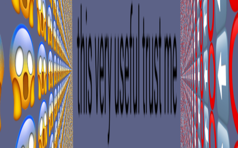
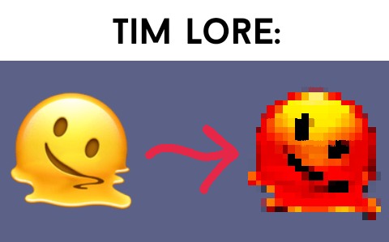

Funi thin text maker
Look from the angle of the charging port for a wholesomen't message
Try this piece of paper . !

TIM
aka Textwall Image Maker
Generate funi textwall.cc art using this tool!
This is actually my old python thingy but for web
Try this paper of piece,
Cheeseborgor.
can i have one chessburger ples
mm chezburger